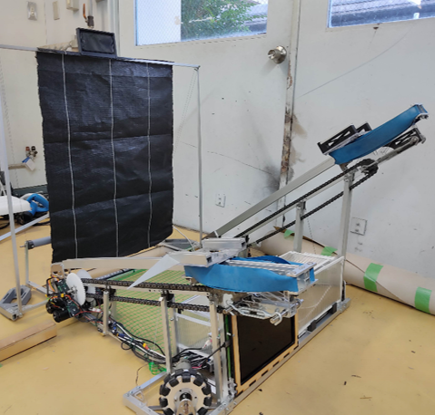
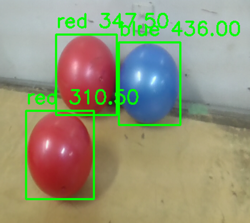
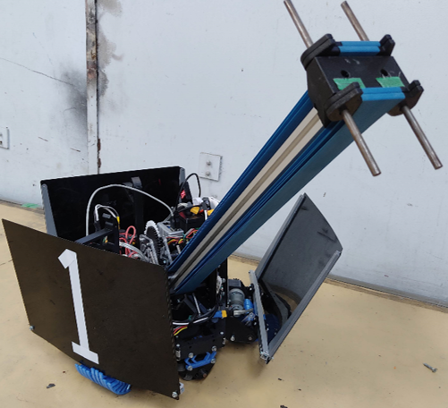
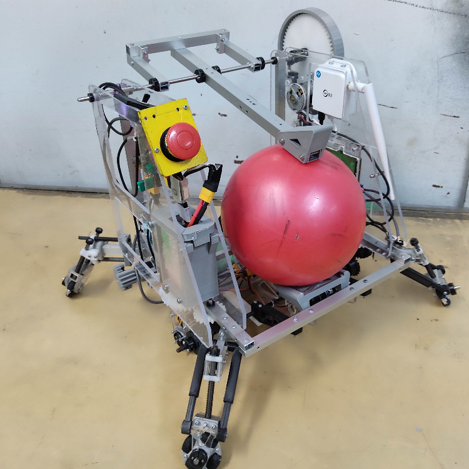

#ワタリドリ
高専ロボコン（正式名称：アイデア対決・全国高等専門学校 ロボットコンテスト）とは「自らの手でロボットを作る」体験を通して発想することの大切さ・物作りの素晴らしさを共有する全国規模の教育イベントです。全国の高等専門学校の学生たちが、自らのアイデアと技術力を用いてロボットを製作します。毎年異なる競技課題を通じてその成果を競う、1988年から続く伝統ある競技大会です。
高専ロボコン2024の競技課題は、『ロボたちの帰還』です。制限時間2分30秒の間に送り込まれたロボットでオブジェクトを回収し、帰還したときのオブジェクト点を競う競技です。
私は今年の高専ロボコンが初参加で、チームリーダー兼制御班として参加しました。チーム「ワタリドリ」は、機械班3人、回路班2人、制御班3人の8人チームでした。全国大会出場とはなりませんでしたが、たくさんの技術を学ぶことができたので、次回以降のロボコンに役立てると思います。
#コウノトリ
コウノトリは私たちのチームのロボット1です。
このロボットの役割としては、
- ロボット2を発射する
- ロボット2から送られてきたボールを回収する
という2つの役割があります。
私はこのロボットではAI部分のプログラムを担当しました
概要としては、ボールが空中に飛んでいる間にカメラで認識したボールの位置に合わせてロボットを動かすというものです。
#ツバメ
ツバメは私たちのチームのロボット2の1つです。
このロボットは箱を回収し、自分自身ごと帰還する役割があります。
動画は帰還時のジャンプ機構
#クロツグミ
クロツグミは私たちのチームのロボット2の1つです。
このロボットはオブジェクトを回収し、帰還する役割があります。
動画はボールを送り届けるキック機構